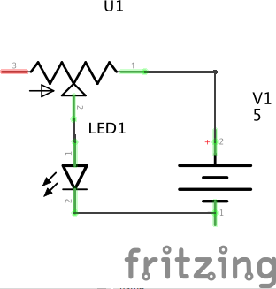
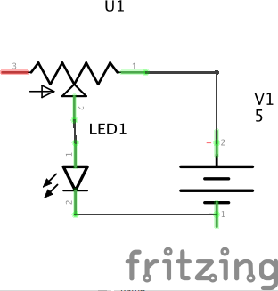

Light an LED using a safely limited current.
An LED is a Light Emitting Diode, a type of semiconductor component which emits light directly from a current. The light results from energized electrons moving between quantum states, and so the light emitted has narrow spectral bands with color depending upon the specific chemical composition. White LEDs are actually a composite structure of multiple LEDs of different colors. White LED light is still narrow-band, unlike the wide-spectrum black-body white light emitted from incandescent bulbs.
A diode is a two-terminal semiconductor device which only conducts current in one direction. For this reason, LEDs are polarized, and will not light up if connected backward (reverse-biased).
Diodes can be modeled as a non-linear resistance which changes with the applied voltage: when reverse-biased, the resistance is very high, and almost no current flows. When forward-biased at small voltages below the forward voltage, the resistance is still high and only a small current flows. Above the forward voltage, the resistance rapidly drops and the diode can conduct substantial current. For LEDs, this is also the point at which they start to light up.
However, this poses a problem, since an LED connected directly to a power source with a voltage higher than the forward voltage will enter a very low-resistance state, conduct a lot of current, and often burn out or melt. We will frequently solve this by using a ballast resistor in series with the LED. This forms a voltage divider which acts as a very simple current regulator.
A typical red LED has a forward voltage of 1.6V and a full-on operating current of 20 mA.The calculation for choosing the right ballast resistor follows this reasoning:
The potentiometer can be damaged by excessive current in this circuit when the wiper moves close to the powered end since a lot of current will flow through a small resistor.
Green and blue LEDs usually have a higher forward voltage, sometimes as high as 3.5V. Blue LEDs were invented much more recently than red LEDs, it took many years to find an affordable chemical composition.
The lab also stocks infrared (IR) LEDs which emits invisible light; this is the same type used by many remote controls.
For a challenge, find one of the four-terminal RGB LEDs and set up a circuit to create different colors.
 
